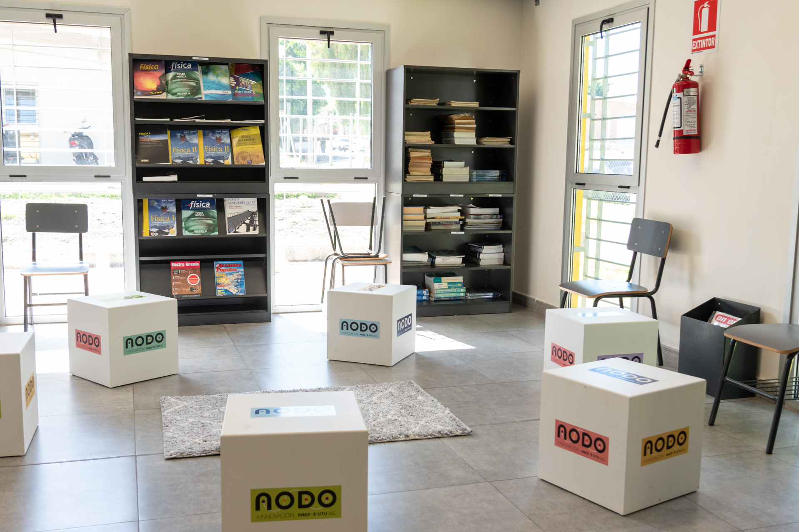

Tecnología
Programación de PLC Siemens
Automatización lógica para procesos de manufactura avanzada.

Programas de formación continua y asesoría en propiedad intelectual para fortalecer capacidades en innovación, tecnología y gestión de proyectos.
Programas de actualización técnica y profesional orientados a fortalecer competencias en innovación, tecnología y gestión de proyectos.
Automatización lógica para procesos de manufactura avanzada.
Dimensionamiento e instalación de paneles para autoconsumo.
Uso de extrusores de alto flujo para prototipado rápido.
Análisis de cultivos mediante sensores multiespectrales.
Mantenimiento de sistemas de potencia en entornos fabriles.
Fundamentos de programación orientados a análisis de datos.
Diseño de productos y procesos con enfoque de ciclo cerrado.
Nuevos cursos en desarrollo para el segundo semestre
Protegemos la innovación generada en nuestros nodos a través de un marco legal sólido. Descargue los formularios y guías oficiales para iniciar su trámite.
Solicite una entrevista con la Unidad de Propiedad Intelectual para evaluar su proyecto y recibir orientación personalizada.
Seleccioná una pregunta para ver la respuesta. Si tenés dudas adicionales podés escribirnos directo.